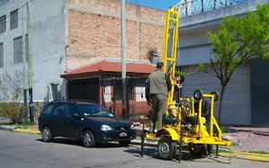
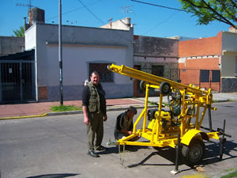
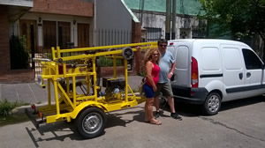

3EN1 v12 | Equipo multifunción con chasis convertible - Zaccari e Hijos



3EN1 v12
Es un equipo multifunción, montado sobre su propio chasis, pensado para cubrir las exigencias por esfuerzo de trabajo. Idénticas características al modelo Pampa II v13. Perno con dos ventajas sobre este. La primera y mas importante, al retirar seis tornillos de fijación al chasis, de la estructura de perforación junto a la torre. Previo haber retirado la base de la bomba de lodos, junto a las misma. Luego haber bajado el equipo, se coloca el eje con ruedas macizas de 250 mm y se lo atornilla al equipo, para poder transportarlo y pasar por un pasillo de un metro. La segunda, utilizar el chasis ahora convertido en batan, para transportar tanques de agua u otra uti-lización del mismo. En este modelo el embrague de polea simple. La mayor dificultad de suelo, la tosca mora. Alcanza una profundidad (según las características de suelo) de 70 metros, 6”/7”.
equipado con motor 10 hp AM
bomba de lodos 50AT
vaina con morsa
malacate manual para 800 kg
linga, grillete, roldana con rulemán
torre para barras de 1500 mm de 1" y 1" 1/4
sistema de agua y mangueras (s/ válvula de retención) se vende co-mo insumo, aparte.
junta de agua giratoria
embrague simple a polea
4 pata regulables
enganche, cadena de seguridad y lu-ces reglamentarias
No cuenta con rueda de auxilio
Los chasis son homologables, pero tramites y
gastos, corren por cuenta del comprador.
Se deben contactar con un ing. Civil y enviar
las fotos requeridas.